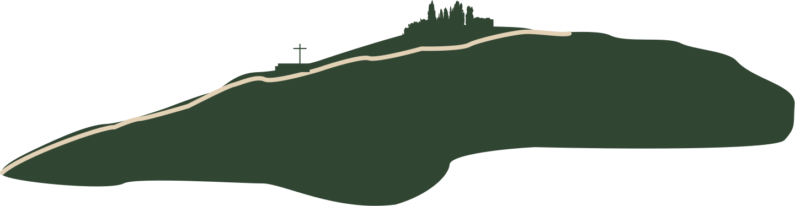

Mapa del cerro
Explora el recorrido y sus puntos de interés. Elige un número en el cerro o en la parte de abajo para acercarte.

Tiempo estimado: Longitud recorrido: Dificultad:
Explora el recorrido y sus puntos de interés. Elige un número en el cerro o en la parte de abajo para acercarte.

Tiempo estimado: Longitud recorrido: Dificultad: